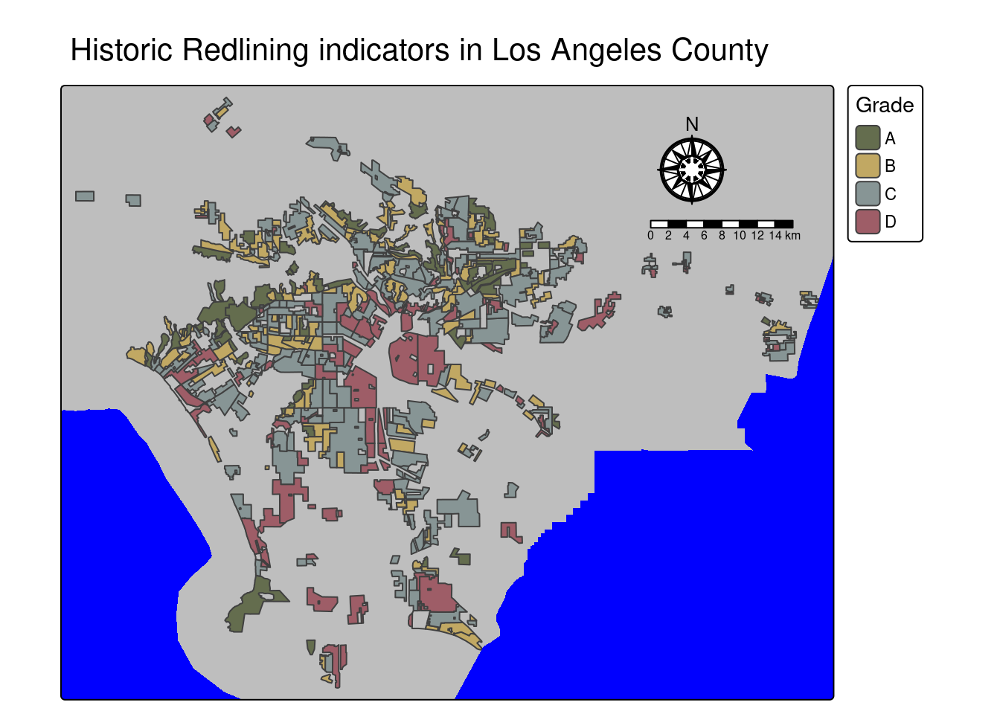

#| message: false
#| warning: false
#First, I'm going to load the necessary packages using p_load
pacman::p_load('tidyverse', 'sf', 'here', 'tmap', 'kableExtra')eds223-homework-2
Redlining and environmental inustice:
Peter Vitale
In this project tktktkt:
I’m going to start by reading in the data on ()
Read in geodatabase of EJScreen data at the Census Block Group level
ejscreen <- sf::st_read(here::here("data", "ejscreen", "EJSCREEN_2023_BG_StatePct_with_AS_CNMI_GU_VI.gdb"))Reading layer `EJSCREEN_StatePctiles_with_AS_CNMI_GU_VI' from data source
`/Users/petervitale/MEDS/EDS-223/eds223-homework-2/data/ejscreen/EJSCREEN_2023_BG_StatePct_with_AS_CNMI_GU_VI.gdb'
using driver `OpenFileGDB'
Simple feature collection with 243021 features and 223 fields
Geometry type: MULTIPOLYGON
Dimension: XY
Bounding box: xmin: -19951910 ymin: -1617130 xmax: 16259830 ymax: 11554350
Projected CRS: WGS 84 / Pseudo-Mercator#Lets filter that to be a bit more specific
california <- ejscreen %>%
dplyr::filter(ST_ABBREV == "CA")
# Filter to San Francisco Bay
la_county <- ejscreen %>%
dplyr::filter(CNTY_NAME %in% 'Los Angeles County')
gbif <- sf::st_read(here::here("data", "gbif-birds-LA", "gbif-birds-LA.shp"))Reading layer `gbif-birds-LA' from data source
`/Users/petervitale/MEDS/EDS-223/eds223-homework-2/data/gbif-birds-LA/gbif-birds-LA.shp'
using driver `ESRI Shapefile'
Simple feature collection with 1288865 features and 1 field
Geometry type: POINT
Dimension: XY
Bounding box: xmin: -118.6099 ymin: 33.70563 xmax: -117.7028 ymax: 34.30385
Geodetic CRS: WGS 84inequality <- sf::st_read(here::here("data", "mapping-inequality", "mapping-inequality-los-angeles.json"))Reading layer `mapping-inequality-los-angeles' from data source
`/Users/petervitale/MEDS/EDS-223/eds223-homework-2/data/mapping-inequality/mapping-inequality-los-angeles.json'
using driver `GeoJSON'
Simple feature collection with 417 features and 14 fields
Geometry type: MULTIPOLYGON
Dimension: XY
Bounding box: xmin: -118.6104 ymin: 33.70563 xmax: -117.7028 ymax: 34.30388
Geodetic CRS: WGS 84Task One
- I am now going to make a map of the HOLC redlining.
tm_shape(la_county, bbox = st_bbox(inequality))+
tm_crs(4326)+
tm_polygons(fill = 'grey',lty = 'blank')+
tm_title('Historic Redlining indicators in Los Angeles County')+
tm_layout(bg.color = 'blue')+
tm_shape(inequality)+
tm_polygons(fill = 'grade',
fill.scale = tm_scale(values = c('#646D4E','#C1A863', '#879595','#9E5D67' )),
fill.legend = tm_legend(title = 'Grade', na.show = FALSE))+
tm_compass(type = 'rose', position = c('right','top'), size = 3)+
tm_scale_bar(position = c('right','top'))! `tm_scale_bar()` is deprecated. Please use `tm_scalebar()` instead.
- Create a table summarizing: the percentage of census block groups that fall within each HOLC grade Also include the percent of census block groups that don’t fall within a HOLC grade Hint: The HOLC data contains the grades and the EJScreen data contains the census blocks, so you will need to combine the data spatially before doing summary statistics. Once you combine and no longer need the geometries, you can use st_drop_geometry().
I want to make a table that summarizes the percentage of census block groups that fall in each grade
I first need to join la_county and inequality
# Before I merge, I need to even the crs
la_county_transformed <- st_transform(la_county, crs = 4326)
sf_use_s2(FALSE) Spherical geometry (s2) switched offla_county_transformed <- st_make_valid(la_county_transformed)
la_holc_ej_join <- st_join(la_county_transformed, inequality)although coordinates are longitude/latitude, st_intersects assumes that they
are planarla_holc_ej_join <- st_drop_geometry(la_holc_ej_join)
# Now I'm going to take a proportion of the census block groups that fall in to each grade.
percentage_grade_df <- la_holc_ej_join %>%
group_by(grade) %>%
summarise(num_of = n()) %>%
mutate(grade_percentage = round(x= (num_of / sum(num_of)) * 100, digits = 2)) %>%
ungroup()
# And now I can make that table
kbl(percentage_grade_df,
col.names = c("Grade", "Count", "Percentage (%)") ) %>%
kable_classic(full_width = F, html_font = "Cambria") %>%
footnote(number = "Table 1. Census Block Percent Groups by HOLC Grade")| Grade | Count | Percentage (%) |
|---|---|---|
| A | 449 | 5.00 |
| B | 1239 | 13.79 |
| C | 3058 | 34.02 |
| D | 1346 | 14.98 |
| NA | 2896 | 32.22 |
| 1 Table 1. Census Block Percent Groups by HOLC Grade |